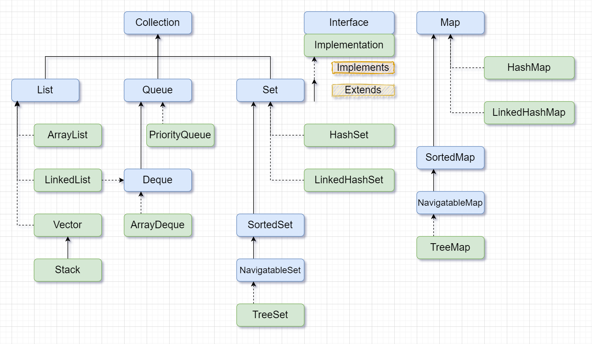

Java集合速览
A quick review of Java Collection and Map key methods. Array based collections usually have:
| Method | Time complexity |
|---|---|
| add | O(1) |
| insert(int index) | O(N) |
| remove | O(1) |
| remove(int index) | O(N) |
| find(Object value) | O(N) |
PriorityQueue, TreeSet and TreeMap are implemented based on balanced tree, thus:
| Method | Time complexity |
|---|---|
| offer | O(logN) |
| poll | O(logN) |
| peek | O(1) |
Overview via a diagram

Collections extends Iterable which has below key methods:
| Method | Description |
|---|---|
boolean hasNext() |
This method returns true if the iterator has more elements. |
object next() |
It returns the element and moves the cursor pointer to the next element. |
void remove() |
This method removes the last elements returned by the iterator. |
List methods
| Method | Description |
|---|---|
void add(int index, E element) |
Inserts the specified element at the specified position in this list (optional operation). |
boolean add(E e) |
Appends the specified element to the end of this list (optional operation). |
boolean addAll(Collection<? extends E> c) |
Appends all of the elements in the specified collection to the end of this list, in the order that they are returned by the specified collection’s iterator (optional operation). |
Eget(int index) |
Returns the element at the specified position in this list. |
E set(int index, E element) |
Replaces the element at the specified position in this list with the specified element (optional operation). |
booleanisEmpty() |
Returns true if this list contains no elements. |
int size() |
Returns the number of elements in this list. |
<T> T[] toArray(T[] a) |
Returns an array containing all of the elements in this list in proper sequence (from first to last element); the runtime type of the returned array is that of the specified array. E.g., String[] y = x.toArray(new String[0]); |
Queue methods
| Method | Description |
|---|---|
void add(E e) |
Inserts the specified element into this queue if it is possible to do so immediately without violating capacity restrictions, returning true upon success and throwing an IllegalStateException if no space is currently available. |
E element() |
Retrieves, but does not remove, the head of this queue. |
boolean offer(E e) |
Inserts the specified element into this queue if it is possible to do so immediately without violating capacity restrictions. |
E peek() |
Retrieves, but does not remove, the head of this queue, or returns null if this queue is empty. |
E poll() |
Retrieves and removes the head of this queue, or returns null if this queue is empty. |
E remove() |
Retrieves and removes the head of this queue. |
Dequeue / LinkedList Methods
| Method | Description |
|---|---|
void addFirst(E e) |
Inserts the specified element at the front of this deque if it is possible to do so immediately without violating capacity restrictions, throwing an IllegalStateException if no space is currently available. |
void addLast(E e) |
Inserts the specified element at the end of this deque if it is possible to do so immediately without violating capacity restrictions, throwing an IllegalStateException if no space is currently available. |
boolean offerFirst(E e) |
Inserts the specified element at the front of this deque unless it would violate capacity restrictions. |
boolean offerLast(E e) |
Inserts the specified element at the end of this deque unless it would violate capacity restrictions. |
E peekFirst() |
Retrieves, but does not remove, the first element of this deque, or returns null if this deque is empty. |
E peekLast() |
Retrieves, but does not remove, the last element of this deque, or returns null if this deque is empty. |
E pollFirst() |
Retrieves and removes the first element of this deque, or returns null if this deque is empty. |
E pollLast() |
Retrieves and removes the last element of this deque, or returns null if this deque is empty. |
E pop() |
Pops an element from the stack represented by this deque. |
void push(E e) |
Pushes an element onto the stack represented by this deque (in other words, at the head of this deque) if it is possible to do so immediately without violating capacity restrictions, throwing an IllegalStateException if no space is currently available. |
E removeFirst() |
Retrieves and removes the first element of this deque.` |
E removeLast() |
Retrieves and removes the last element of this deque. |
Summary of Deque methods
| First Element (Head) | Last Element (Tail) | |||
|---|---|---|---|---|
| Throws exception | Special value | Throws exception | Special value | |
| Insert | addFirst(e) | offerFirst(e) | addLast(e) | offerLast(e) |
| Remove | removeFirst() | pollFirst() | removeLast() | pollLast() |
| Examine | getFirst() | peekFirst() | getLast() | peekLast() |
Comparison of Queue and Deque methods
| Queue Method | Equivalent Deque Method |
|---|---|
| add(e) | addLast(e) |
| offer(e) | offerLast(e) |
| remove() | removeFirst() |
| poll() | pollFirst() |
| element() | getFirst() |
| peek() | peekFirst() |
Comparison of Stack and Deque methods
| Stack Method | Equivalent Deque Method |
|---|---|
| push(e) | addFirst(e) |
| pop() | removeFirst() |
| peek() | getFirst() |
| Method | Description |
|---|---|
| boolean add(E e) | Adds the specified element to this set if it is not already present. |
TreeSet methods
| Method | Description |
|---|---|
| boolean | add(E e) |
| E ceiling(E e) | Returns the least element in this set greater than or equal to the given element, or null if there is no such element. |
| E first() | Returns the first (lowest) element currently in this set. |
| E floor(E e) | Returns the greatest element in this set less than or equal to the given element, or null if there is no such element. |
| SortedSet |
Returns a view of the portion of this set whose elements are strictly less than toElement. |
| NavigableSet |
Returns a view of the portion of this set whose elements are less than (or equal to, if inclusive is true) toElement. |
| E higher(E e) | Returns the least element in this set strictly greater than the given element, or null if there is no such element. |
| E last() | Returns the last (highest) element currently in this set. |
| E lower(E e) | Returns the greatest element in this set strictly less than the given element, or null if there is no such element. |
| E pollFirst() | Retrieves and removes the first (lowest) element, or returns null if this set is empty. |
| E pollLast() | Retrieves and removes the last (highest) element, or returns null if this set is empty. |
| NavigableSet |
Returns a view of the portion of this set whose elements range from fromElement to toElement. |
| SortedSet |
Returns a view of the portion of this set whose elements range from fromElement, inclusive, to toElement, exclusive. |
| SortedSet |
Returns a view of the portion of this set whose elements are greater than or equal to fromElement. |
| NavigableSet |
Returns a view of the portion of this set whose elements are greater than (or equal to, if inclusive is true) fromElement. |
Map methods
| Method | Description |
|---|---|
| V get(Object key) | Returns the value to which the specified key is mapped, or null if this map contains no mapping for the key. |
| V put(K key, V value) | Associates the specified value with the specified key in this map (optional operation). |
| boolean containsKey(Object key) | Returns true if this map contains a mapping for the specified key. |
| boolean containsValue(Object value) | Returns true if this map maps one or more keys to the specified value. |
| Set<Map.Entry<K,V>> entrySet() | Returns a Set view of the mappings contained in this map. |
| Set |
Returns a Set view of the keys contained in this map. |
| Collection |
Returns a Collection view of the values contained in this map. |
Default methods:
compute:
Attempts to compute a mapping for the specified key and its current mapped value (or null if there is no current mapping).1
2
3
4public V compute(K key, BiFunction<? super K,? super V,? extends V> remappingFunction);
// Example:
map.compute(key, (k, v) -> (v == null) ? msg : v.concat(msg));computeIfAbsent: If the specified key is not already associated with a value (or is mapped to null), attempts to compute its value using the given mapping function and enters it into this map unless null.1
2
3
4
5
6
7
8
9
10
11
12
13public V computeIfAbsent(K key, Function<? super K,? extends V> mappingFunction) {
// Equivalent to:
if (map.get(key) == null) {
V newValue = mappingFunction.apply(key);
if (newValue != null)
map.put(key, newValue);
return newValue;
}
return null;
}
// Example call:
map.computeIfAbsent(key, k -> new HashSet<V>()).add(v);computeIfPresent: If the value for the specified key is present and non-null, attempts to compute a new mapping given the key and its current mapped value.
If the remapping function returns null, the mapping is removed. If the remapping function itself throws an (unchecked) exception, the exception is rethrown, and the current mapping is left unchanged.1
public V computeIfPresent(K key, BiFunction<? super K,? super V,? extends V> remappingFunction);
merge:
If the specified key is not already associated with a value or is associated with null, associates it with the given non-null value. Otherwise, replaces the associated value with the results of the given remapping function, or removes if the result is null. This method may be of use when combining multiple mapped values for a key.1
2
3
4public V merge(K key, V value, BiFunction<? super V,? super V,? extends V> remappingFunction);
// Example: if key is not present, set map[key] = 1; Otherwise, map[key]++.
map.merge(key, 1, (cur, notUsed) -> cur + 1);
TreeMap methods
| Method | Description |
|---|---|
| Map.Entry<K,V> firstEntry() | Returns a key-value mapping associated with the least key in this map, or null if the map is empty. |
| K firstKey() | Returns the first (lowest) key currently in this map. |
| Map.Entry<K,V> lastEntry() | Returns a key-value mapping associated with the greatest key in this map, or null if the map is empty. |
| K lastKey() | Returns the last (highest) key currently in this map. |
| Map.Entry<K,V> ceilingEntry(K key) | Returns a key-value mapping associated with the least key greater than or equal to the given key, or null if there is no such key. |
| K ceilingKey(K key) | Returns the least key greater than or equal to the given key, or null if there is no such key. |
| Map.Entry<K,V> floorEntry(K key) | Returns a key-value mapping associated with the greatest key less than or equal to the given key, or null if there is no such key. |
| K floorKey(K key) | Returns the greatest key less than or equal to the given key, or null if there is no such key. |
| Map.Entry<K,V> lowerEntry(K key) | Returns a key-value mapping associated with the greatest key strictly less than the given key, or null if there is no such key. |
| K lowerKey(K key) | Returns the greatest key strictly less than the given key, or null if there is no such key. |
| Map.Entry<K,V> higherEntry(K key) | Returns a key-value mapping associated with the least key strictly greater than the given key, or null if there is no such key. |
| K higherKey(K key) | Returns the least key strictly greater than the given key, or null if there is no such key. |
| SortedMap<K,V> headMap(K toKey) | Returns a view of the portion of this map whose keys are strictly less than toKey. |
| NavigableMap<K,V> headMap(K toKey, boolean inclusive) | Returns a view of the portion of this map whose keys are less than (or equal to, if inclusive is true) toKey. |
| SortedMap<K,V> tailMap(K fromKey) | Returns a view of the portion of this map whose keys are greater than or equal to fromKey. |
| NavigableMap<K,V> tailMap(K fromKey, boolean inclusive) | Returns a view of the portion of this map whose keys are greater than (or equal to, if inclusive is true) fromKey. |
References:
专题:
Java
本文发表于 2021-03-07，最后修改于 2023-12-12。
上一篇 « 详解线段树之进阶(Segment Tree) 下一篇 » 详解水塘抽样(Reservoir sampling)